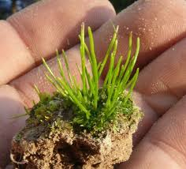

Anthocerotaceae
A Hornwort Family
Anthocerotaceae is a major family within the hornwort order Anthocerotales. It includes well-known genera like Anthoceros and Folioceros, characterized by thalloid gametophytes and prominent, erect sporophytes that typically produce dark brown or black, ornamented spores.
Overview
Anthocerotaceae is one of the core families within the largest hornwort order, Anthocerotales. This family encompasses species traditionally considered "typical" hornworts, primarily belonging to the genera Anthoceros and Folioceros, along with smaller genera like Sphaerosporoceros. The exact number of species varies with taxonomic treatment but is likely in the range of 50-100.
Members of Anthocerotaceae are distributed worldwide, commonly found on moist, often disturbed soil in fields, gardens, ditches, and along stream banks. They exhibit the characteristic hornwort life cycle with a dominant gametophyte thallus and a dependent, erect, horn-like sporophyte. The family is primarily distinguished from the closely related Phaeocerotaceae by its dark brown to black spores (versus yellowish spores in Phaeocerotaceae) and often more complex internal thallus structure (presence of schizogenous cavities).
Quick Facts
- Scientific Name: Anthocerotaceae
- Common Name: A Hornwort Family
- Notable Genera: Anthoceros, Folioceros, Sphaerosporoceros
- Number of Species: Approximately 50-100
- Distribution: Worldwide, typically on moist soil
- Evolutionary Group: Bryophytes - Hornworts (Anthocerotophyta) - Class Anthocerotopsida - Order Anthocerotales
Key Characteristics
Gametophyte (Thallus)
The gametophyte thallus is typically dark green, flattened, and forms irregular rosettes or lobed mats. The internal structure often contains schizogenous mucilage cavities or canals (formed by separation of cells), which house symbiotic Nostoc colonies. The thallus surface may be smooth or somewhat roughened or lamellate (bearing small flaps of tissue).
Reproductive Structures (Gametangia)
Antheridia and archegonia are embedded within the dorsal thallus tissue. Antheridia often occur in groups within chambers.
Sporophyte
The sporophyte is characteristic of the order Anthocerotales:
- Morphology: An elongated, erect, cylindrical or horn-like photosynthetic capsule.
- Growth: Continuous growth from a basal meristem.
- Dehiscence: Splits into two longitudinal valves from the apex downwards.
- Stomata: Present on the epidermis.
- Columella: A central sterile columella is well-developed.
Spores and Pseudoelaters
Spore characteristics are key for distinguishing the family:
- Spores: Typically darkly pigmented (dark brown to opaque black), tetrahedral (with a trilete scar), and variously ornamented (spiny, reticulate, ridged). The dark color contrasts with the yellowish spores of Phaeocerotaceae.
- Pseudoelaters: Present, usually multicellular, somewhat elongated or irregular, sometimes branched, thin-walled, assisting in spore dispersal. They lack distinct helical thickenings.
Cellular and Chemical Features
Cells typically contain a single large chloroplast with a pyrenoid. The presence of internal schizogenous cavities (in addition to Nostoc cavities) is common. Nostoc symbiosis occurs.
Field Identification
Identifying Anthocerotaceae in the field relies on recognizing the typical hornwort sporophyte and thallus, with confirmation often requiring microscopic examination of spores.
Primary Identification Features
- Thalloid Gametophyte: Flattened, green, often rosette-like.
- Long, Erect, Horn-like Sporophyte: Splitting into two valves.
- Dark Brown/Black Spores: Visible as dark powder in dehiscing sporophytes (confirmation requires microscopy for ornamentation and trilete scar).
- Internal Thallus Cavities: Often present (requires sectioning).
Secondary Identification Features
- Habitat: Moist, often disturbed soil.
- Stomata on Sporophyte: Present.
- Single Large Chloroplast per Cell: Typical.
Seasonal Identification Tips
Observe throughout the year:
- Gametophyte: Present year-round in suitable conditions.
- Sporophyte: Seasonal, but persistent and conspicuous. Mature, dehiscing sporophytes are needed to observe spore color macroscopically (as dark mass) or microscopically for definitive ID.
Common Confusion Points
Anthocerotaceae can be confused with:
- Phaeocerotaceae (e.g., Phaeoceros): Very similar habit and sporophyte structure, but distinguished by yellowish spores and typically solid thalli (lacking schizogenous cavities).
- Other Hornwort Families/Orders: Differ in sporophyte size/shape (Notothyladaceae), pseudoelater structure (Dendrocerotaceae), or spore type (Leiosporocerotaceae).
- Thalloid Liverworts: Lack the characteristic hornwort sporophyte; possess oil bodies.
Field Guide Quick Reference
Look For (Gametophyte):
- Flattened, green thallus (rosette)
- Internal cavities often present
- Nostoc colonies present
- Single large chloroplast per cell
Look For (Sporophyte & Spores):
- Long, erect capsule (2 valves)
- Spores: Dark brown/black, ornamented, trilete (Microscopic ID needed for details)
- Pseudoelaters without helical bands
Notable Examples
This family includes some of the most commonly encountered hornworts.

Anthoceros agrestis
Field Hornwort
A common, cosmopolitan species often found as a weed in cultivated fields and disturbed, damp soil. Forms dark green rosettes with somewhat ruffled margins and conspicuous internal cavities. Produces numerous long, erect sporophytes with characteristic black, spiny spores.

Anthoceros punctatus
Dotted Hornwort
Another widespread species, similar in habit to A. agrestis. Its name refers to the often clearly visible dark dots on the thallus, which are the internal cavities containing Nostoc colonies. Spores are dark and ornamented.

Folioceros spp.
(Foliose Hornworts)
This genus, primarily tropical and subtropical, often has thalli that are more elongated or divided, sometimes with lamellae (leaf-like outgrowths) on the dorsal surface. Sporophytes are typical for the family, producing dark, ornamented spores.
Phylogeny and Classification
Anthocerotaceae is a family within the order Anthocerotales and the class Anthocerotopsida. It represents a major lineage within the "typical" hornworts characterized by dark spores. Molecular phylogenetics supports its distinction from Phaeocerotaceae (yellow-spored hornworts), although the exact boundaries and relationships among genera within these families are still areas of research.
The family showcases the characteristic features of the order Anthocerotales, including the prominent, photosynthetic sporophyte with stomata and basal meristem, and the symbiotic relationship with Nostoc.
Position in Plant Phylogeny
- Kingdom: Plantae
- Clade: Embryophytes (Land Plants)
- Division: Anthocerotophyta (Hornworts)
- Class: Anthocerotopsida
- Order: Anthocerotales
- Family: Anthocerotaceae
Evolutionary Significance
Anthocerotaceae is significant for:
- Core Hornwort Lineage: Represents a major part of the diversity within the largest hornwort order, Anthocerotales.
- Spore Characteristics: The dark, ornamented spores are a key trait defining this lineage compared to the yellow-spored Phaeocerotaceae.
- Model Organisms: Species like Anthoceros agrestis are sometimes used in studies of bryophyte development, physiology, and symbiosis.
- Ecological Role: Common colonizers of disturbed, moist soils, contributing to soil stabilization and nutrient cycling (via Nostoc).